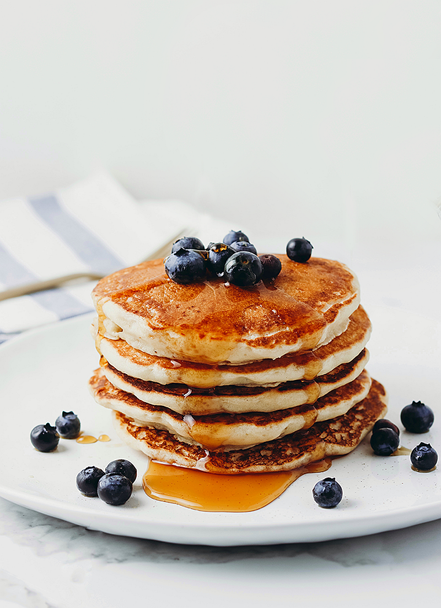

Fluffy Vegan Buttermilk Pancakes (Just 6 ingredients 😋!)
These Vegan Buttermilk Pancakes are the best, thick and fluffy vegan pancakes. Whip up a stack this weekend in 20
minutes or less with simple ingredients you can find anywhere.
I have been experimenting with this pancake recipe for a while, and am finally ready to share the perfect pancake
recipe. I LOVE pancakes that are light and fluffy and thick, but still simple enough to whip up in the morning and these
check every box.
Why You’ll Love This Recipe
-
No complicated ingredients. Many vegan pancake recipes contain a long ingredient list, but I wanted to keep this fluffy
vegan pancake recipe as simple as possible. No flax egg, funky flour substitutes, or expensive sugar alternatives.
-
Tastes just like classic pancakes.No one would ever guess that these pancakes are vegan - they taste
just like the real thing and are approved by hundreds
of pancake lovers.
-
Easy to customize.Below I've shared several substitutions you can make to suit your pantry and use what you have on hand, including a
gluten-free option.

Key Ingredients and Substitutions
-
Almond milk - I love using lightly sweetened, original Almond Breeze, but really any plant milk will do. Coconut milk, soy milk, or
oat milk are great choices.
-
Apple cider vinegar - This acid helps the almond milk curdle and creates your own vegan buttermilk. White vinegar is another option, if you
are out of apple cider vinegar.
-
Flour - For the fluffiest vegan pancakes, I’d recommend using the classic all-purpose flour. or a combination of regular flour
and whole wheat flour. If you are gluten-free, a gluten-free flour blend such as Bob’s Red Mill will work.
-
Baking powder – The key to making the pancakes tall and thick.
-
Sugar - A couple tablespoons of granulated sugar adds a light sweetness. I used granulated cane sugar, but another sugar such as
light brown sugar or coconut sugar are alternative options.
-
Oil – Helps keep the pancake batter soft, fluffy, and adds a nice, cozy flavour. Any light tasting oil will do – try olive
oil, avocado oil, vegetable oil or even melted coconut oil.
vegan buttermilk pancakes recipe
INGREDIENTS
- 1 cup Almond Breeze Original Almondmilk
- 1 tsp apple cider vinegar
- 1 cup all-purpose flour
- 2 tsp baking powder
- 2 tbsp sugar
- pinch of salt
- 1 tbsp oil
-------------------------------------------------------------------------------------------------------------------------
INSTRUCTIONS
- Combine the Almond Breeze Original Almondmilk and apple cider vinegar, stirring well. Set aside.
- In a mixing bowl, whisk together flour, baking powder, sugar and salt.
- Add the oil to the almondmilk mixture and stir. Then pour into dry mixture.
- Mix until JUST combined. Lumps are okay! Do not over-mix. See video for what the batter should look like.
- Heat a frying pan to medium heat. Spray oil lightly onto pan.
- Using scoop batter into round pancake shapes, leaving some room for spreading. I usually do 2 at a time. BE PATIENT! Let
it cook until bubbles rise to the surface then burst, and the edges start to look cooked. Take a peak underneath and if
it is golden, flip to the other side. Cook about 30 seconds-1 minute on the other side (the second side takes much less
time to cook).
Home